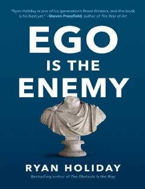

EIEgo muvaffaqiyatdagi eng katta dushman ekanligi va uni kamtarlik bilan yengish yo'llari haqida kitob.
Ushbu kitob muvaffaqiyat va ijod yo'lidagi eng katta to'siq bo'lgan xudbinlik (ego) bilan qanday kurashish kerakligini ko'rsatib beradi. Muallif tarixiy misollar va falsafiy yondashuvlar orqali kamtarlik va mehnatsevarlik muvaffaqiyat Kaliti ekanligini tushuntiradi. Kitob o'quvchilarga o'z yo'lidagi to'siqlarni yengish va to'g'ri fikrlash ko'nikmalarini shakllantirishda yordam beradi.